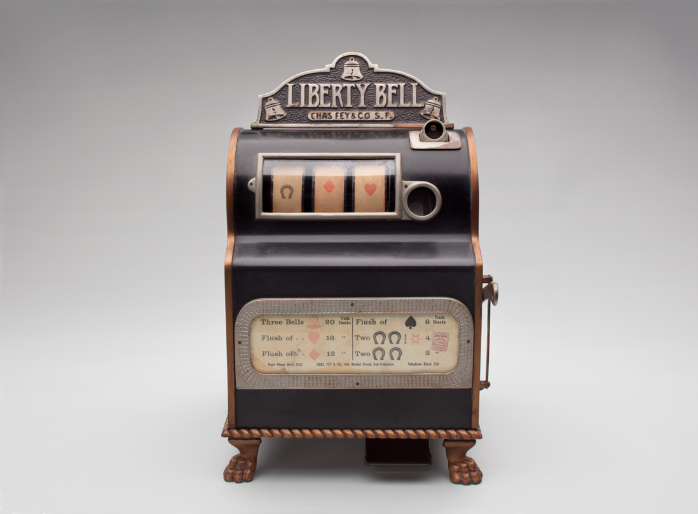
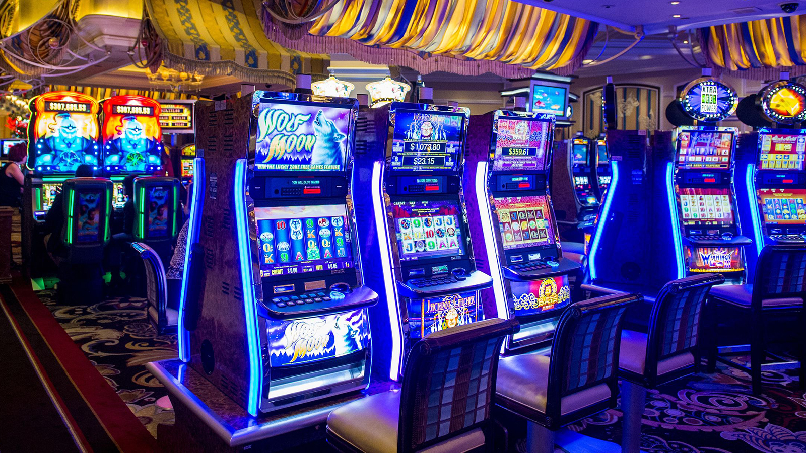

Slot machines are the most popular method of gambling at casinos across the world. The first machines were introduced in the late 19th century in Brooklyn, New York City. For a nickel, a person could pull the lever and a few drums with poker cards would spin. The goal was to get the best poker hand available, however there was no direct payout mechanism. For a pair of kings one could get a beer and for a royal flush pay for cigars. Due to the coplexity of poker combinations, it was difficult to design a payout mechanism, thus around 1890 Charles Fey devised a much simpler game. The spinning reels had diamonds, spades, hearts and bells on them (hence the name liberty bell), which greatly reduced the complexity of combinations and allowed for an automatic payout. The popularity of the machines skyrocketed, and soon they were installed in most bars, brothels and bowling alleys.
1899 "Liberty Bell" machine, manufactured by Charles Fey.
The first electronic slot machine was developed in the 60s and in the 70s, video slot machine started gaining traction. They were the precursors to modern slot machines, which include colorful displays and characteristic sounds.
Modern slot machines.
It might be counterintuitive at first to acknowledge the popularity of slot machines, since they will always lead to the gambler losing money in the long term. Even the first poker based slot machines removed 2 cards from the deck, to give the house an edge. Yet, according to a 2019 study by Mike J. Dixon, slot machines are forms of escapism and entertainment. The immediate payoff, unpredictability, flashing lights and trendy themes allow the gambler to enter a "slot machine zone" or a state of "flow", in which the game dominates one's awareness. It is similar to a "flow" achieved while playing video games. People that struggle with mindfullness or suffer from depression are drawn to this form of escapism, despite the negative impact of slot machines on money and time management. Unlike poker or blackjack, it is a solitary game that in the eyes of addicts is seen as "self-medication". Maybe that could explain the popularity of slot machines.
To caculate the probability of winning on a slot machines, one mus
Slot machines are nowadays operated using random number generators (RNGs)...
Distinct culture.....